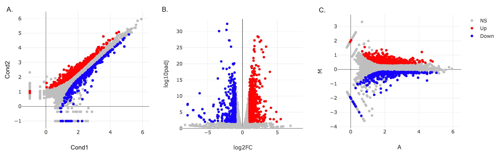
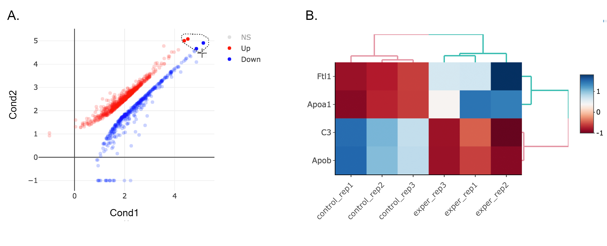
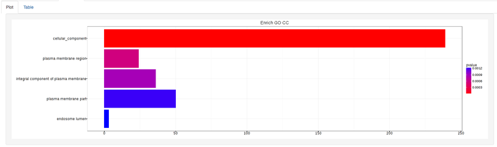

Examples¶
This guide is walkthrough for the preparation of figures which is used in DEBrowser paper. PCA, Heatmap, All2All will be plotted as an example for QC plots. Next, differential expression analysis will be conducted and their results will be visualized with Main plots such as Scatter, Volcano and MA. More detailed analysis will be covered by using simultaneously created Heatmap and KEGG pathway on the selected portion of the data.
QC plots without Batch Effect Correction¶
- Upload Data: To begin the analysis, you need to load Demo Data by clicking Load Demo (Donnard et al)! button. Then click on Filter button to start Low Count Filtering.
- Low Count Filtering: Filtering method is selected as Max with cutoff 10 (which filter genes where maximum count for each gene across all samples are less than 10) and activated by clicking Filter button which is located at the center of the page. After filtration you can see the distribution of the data as shown at below. Now, you can proceed by clicking Batch Effect Correction button.

Batch Effect Correction and Normalization: Following options were selected to normalize the data:
- Normalization method: MRN
- Correction Method: None
In order to adjust the appearance, use PCA controls which is located between two PCA plots.
- Text On/Off: On
- Select legend: color
- Color field: batch
- Shape field: batch

- All2All: After batch effect correction, you can click ‘Go to QC plots!’ to view quality control metrics on your data. The page opens with a Principal Component Analysis (PCA) plot. You can select All2All option from Plot type on the left sidebar menu. In order to get the figure as shown at below, you need to adjust other parameters of plot options on the left sidebar menu.

All2All - Plot Options: Following options are selected and their screenshots are shown at below.
- Plot Type: All2All
- Select Plot Options: Choose a dataset: all-detected
- QC options - all2all - Size & Margins: Check the box of the Plot Size and adjust width and height as 800 and 800, respectively.
- QC options - all2all - Options: corr font size: 1.8 (adjust the font size of the text inside the box)
- Heatmap: To visualize heatmap as shown at below, please select Heatmap option from Plot type on the left sidebar menu and adjust plot options.

Heatmap - Plot Options: Similar to All2All plot, we need to adjust plotting options on the left sidebar menu.
- Plot Type: Heatmap
- Heatmap Colors: Check the box of custom colors.
- Select Plot Options: Choose a dataset: most varied, top-n:1000, total min count:100 (to show the top 1000 most varied genes (based on coefficient of variance) whose total counts are higher than 100)
- QC options - kmeans: Check the box of kmeans clustering. Select 7 as # of clusters. You might need to change the order of the clusters and click change order button to get gradual changes on heatmap as in the figure.
- QC options - heatmap - Size & Margins: Check the box of the Plot Size and adjust width and height to 690 and 1200, respectively.
{kind=link}
QC plots after Batch Effect Correction¶
Since we finalized out plots without applying batch effect correction, we can return back to batch effect correction step and change the Correction Method as Combat and continue to create new graphs with the same parameters as we used before. To make it more user friendly, we gonna start explain these steps from the beginning. If you choose to continue from batch effect correction, please skip first two steps and continue reading from 3rd step: Batch Effect Correction and Normalization.
Upload Data: To begin the analysis, load Demo Data by clicking Load Demo (Donnard et al)! button. Then click on Filter button to start Low Count Filtering.
Low Count Filtering: Select Max method with cutoff 10 (which filter genes where maximum count for each gene across all samples are less than 10), then click Filter button which is located at the center of the page. After filtration, proceed to next step by clicking Batch Effect Correction button.
Batch Effect Correction and Normalization: Following options were selected to apply both normalization and batch effect correction:
- Normalization method: MRN
- Correction Method: Combat
- Treatment: treatment
- Batch: batch
Please adjust PCA controls (which is located between two PCA plots) as listed below.
- Text On/Off: On
- Select legend: color
- Color field: batch
- Shape field: batch

- All2All: After batch effect correction, click ‘Go to QC plots!’ and select All2All option from Plot type on the left sidebar menu. Please adjust All2All - Plot Options as listed below.

All2All - Plot Options:
- Plot Type: All2All
- Select Plot Options: Choose a dataset: all-detected
- QC options - all2all - Size & Margins: Check the box of the Plot Size and adjust width and height to 800 and 800, respectively.
- QC options - all2all - Options: corr font size: 1.8
- Heatmap: Please select Heatmap option from Plot type on the left sidebar menu and adjust plot options according to the list below.
Heatmap - Plot Options:
- Plot Type: Heatmap
- Heatmap Colors: Check the box of custom colors.
- Select Plot Options: Choose a dataset: most varied, top-n:1000, total min count:100 (to show the top 1000 most varied genes (based on coefficient of variance) whose total counts are higher than 100)
- QC options - kmeans: Check the box of kmeans clustering. Select 7 as # of clusters. You might need to change the order of the clusters and click change order button to get gradual changes on heatmap as in the figure.
- QC options - heatmap - Size & Margins: Check the box of the Plot Size and adjust width and height to 690 and 1200, respectively.
{kind=link}
The Differential Expression Plots¶
Upload Data: To begin the analysis, load Count Data by clicking Load Demo (Vernia et. al)! button. Then click on Filter button to start Low Count Filtering.
Low Count Filtering: Select Max method with cutoff 10 (which filter genes where maximum count for each gene across all samples are less than 10), then click Filter button which is located at the center of the page. Proceed to next step by clicking Batch Effect Correction button.
Batch Effect Correction and Normalization: We gonna skip both normalization and batch effect correction by selecting following options:
- Normalization method: None
- Correction Method: None
DE Analysis: After batch effect correction, click ‘Go to DE Analysis’. In this page, we will add groups for comparison. Click on Add New Comparison button and select Select Meta as treatment. It will automatically separate experiment and control data into two groups. You can leave other parameters as default as listed below and click “Submit” button.
- DE method: DESeq2
- Fit Type: parametric
- betaPrior: FALSE
- Test Type: Wald


- Main Plots Analysis: Upon finishing the DESeq analysis, you will see DE Results in table format. Please click on Go to Main Plots! button which will open Scatter Plot. You can switch to Volcano Plot and MA Plot by using Plot Type section at the left side of the menu. Since these plots are interactive, you can click to zoom button on the top of the graph and select the area you would like to zoom in by drawing a rectangle. Please see the plots at below:
Please keep in mind that to increace the performance of the generating graph, by default 10% of non-significant(NS) genes are used to generate plots. We used all of the NS genes in our plots that showed above, therefore please click Main Options button and change Background Data(%) to 100% on the left sidebar.

- Read count plots: Lets return back to Scatter Plot by using Plot Type section. You can hover on each point on the graph to see their read counts as a bar graph as shown at below. In this example FABP3 is selected to show the high variance of this gene across samples.

If you want to mark FABP3 gene on the plot, click on Select Plot Options and enter FABP3 in to the search field as showed below. You will see green mark on the plot that shows FABP3.

- Lasso selection: DEBrowser can draw heatmaps of any selected region of any main plot. Selection can be made in a rectangular form or as a free-form using plotly’s lasso select. To do so, first click NS label at the upper right side of the figure, and hide non-significant genes. Then click on lasso select button at the top of the plot and select the genes you’re interested as shown at below. Heatmap will appear just next to scatter plot. Additionally, you can activate interactive mapping option for heatmap by clicking Interactive button under Heatmap Options on the left sidebar menu. Now, you can hover on the each block of heatmap to see gene name and its value.
Tip
Interactive Feature: In order to increase the performance of the generating heatmaps, interactive option is disabled by default. After deciding plotting/clustering parameters of the heatmap, you might activate this feature to investigate each block in detail.
Scatter plot of the genes enriched in insulin signalling pathway: In this example, we will highlight genes enriched in insulin signalling pathway. If you already hid NS genes, you can show them by clicking on the NS label at the upper right side of the figure. Click on the Select Plot Options and enter following genes in to the search field:
Cbl Sos1 Irs2 Insr Ptprf Tsc1 Crkl Prkar2a Acaca Fasn Mapk8 Ppp1r3b Ppp1r3c Srebf1 Pklr Pik3r1 Pygl Pik3r3 Socs4 Socs2 Eif4ebp1Tip
If you enter more than three lines of genes, search tool will automatically match the beginning and end of the search phrases. Otherwise it will find matched substrings in the gene list.
Now, you will see green marks on the searched genes as shown below:

Lets, hide all the genes other then searched genes by clicking NS, Up and Down labels at the upper right side of the figure. Since only the selected genes are left on the graph, we can select these genes by clicking on Select Box icon and drawing a rectangle which covers all of these genes.

Here as shown below, heatmap will be simultaneously created just next to scatter plot. You might need to change plot margins as following:
- Heatmap options -> heatmap - Size & Margins: Please check the box of the Plot Size and adjust width and height to 580 and 500, respectively.

Since the data is not normalized, data of exper_rep3 looks like it belongs to control group. We strongly recommend normalization before plotting subset of genes. To normalize, please change the parameters as described below and see the updated figure at below:
- Select Plot options -> Normalization Methods: Please select MRN from the dropdown box.
{kind=link}
{kind=link}
{kind=link}
{kind=link}
Activating Interactive feature changes the heatmap into an interactive version with two colors, allowing you to select specific genes to be compared within the GO term plots.
GO Term Plots¶
The next tab, ‘GO Term’, takes you to the ontology comparison portion of DEBrowser. From here you can select the standard dataset options such as p-adjust value, fold change cut off value, which comparison set to use, and which dataset to use on the left menu. In addition to these parameters, you also can choose from the 4 different ontology plot options: ‘enrichGO’,’enrichKEGG’, ‘Disease’, and ‘compareCluster’. Selecting one of these plot options queries their specific databases with your current DESeq results.

Your GO plots include:
- enrichGO - use enriched GO terms
- enrichKEGG - use enriched KEGG terms
- Disease - enriched for diseases
- compareClusters - comparison of your clustered data
The types of plots you will be able to generate include:
Summary plot:
GOdotplot:

Changing the type of ontology to use will also produce custom parameters for that specific ontology at the bottom of the left option panel.
Once you have adjusted all of your parameters, you may hit the submit button in the top right and then wait for the results to show on screen!